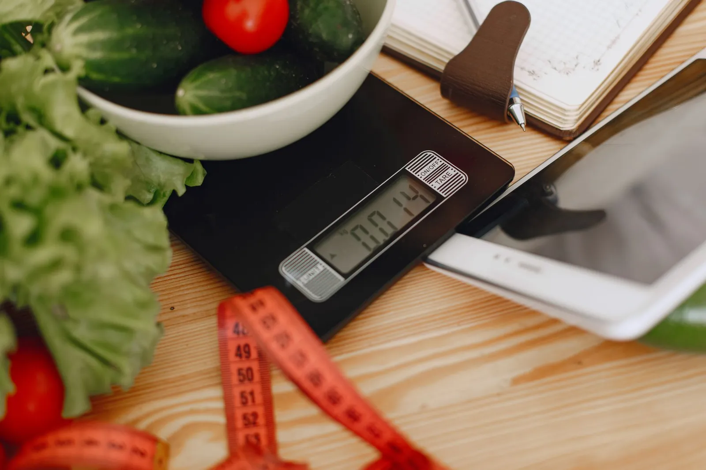

Diyetisyen · yüz yüze ve online
Listeniz hazır,
takibiniz cebinizde.
Kilo yönetimi, sporcu beslenmesi, gebelik ve emzirme dönemi, çocuk beslenmesi. Randevu, ölçüm hatırlatması ve haftalık takip WhatsApp'tan.
Beslenme ve diyet danışmanlığı · Konyaaltı / Antalya
Danışmanlık alanları
Her plan, ilk görüşmedeki ölçüm ve değerlendirmeye göre kişiye özel hazırlanır.
- 01Kilo yönetimi
Vücut analizi, kişiye özel plan ve haftalık takip.
- 02Sporcu beslenmesi
Antrenman ve yarış dönemine göre beslenme planı.
- 03Gebelik ve emzirme
Dönemin ihtiyaçlarına uygun, hekiminizle uyumlu plan.
- 04Çocuk ve ergen beslenmesi
Aileyle birlikte, sürdürülebilir alışkanlıklar.
- 05Hastalıklarda beslenme
Diyabet, insülin direnci, tansiyon; hekim takibiyle birlikte.
- 06Online danışmanlık
Şehir dışından görüntülü görüşme ve uygulama üzerinden takip.
Sağlık mevzuatı gereği sitede fiyat, danışan yorumu ve kilo kaybı vaadi yer almaz.

Hakkımızda
Hakkımda
Beslenme ve diyetetik mezunuyum; Konyaaltı'ndaki ofisimde ve online olarak danışmanlık veriyorum. Yasak listesi değil, hayatınıza uyan bir düzen hazırlıyorum.
Ölçüm günü, su hatırlatması ve haftalık kontrol WhatsApp'tan gelir; sorularınız cevapsız kalmaz.
Ekip (örnek)
- Dyt. Elif Aydınbeslenme ve diyet uzmanı
Sık sorulanlar
Merak edilenler
İlk görüşmede ne yapılıyor?
Vücut analizi, beslenme alışkanlıkları ve hedefleriniz konuşulur; plan bu bilgilere göre hazırlanır.
Online danışmanlık nasıl oluyor?
Görüntülü görüşme yapılır, ölçümlerinizi evden iletirsiniz; takip WhatsApp'tan sürer.
Randevuyu nasıl alırım?
WhatsApp'tan yazmanız yeterli; boş saatler anında sunulur.
İletişim
Bize ulaşın
- AdresLiman Mah., Boğaçayı Cd. · Konyaaltı / Antalya (örnek adres)
- SaatlerPzt–Cmt 09:00–19:00 · Online görüşme akşam 21:00'e kadar
- Telefon0242 ••• •• •• (örnek)
- WhatsAppasistanı deneyin ↓